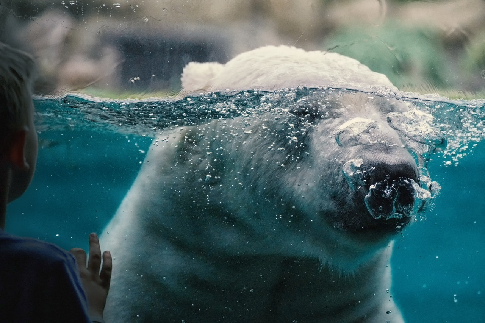
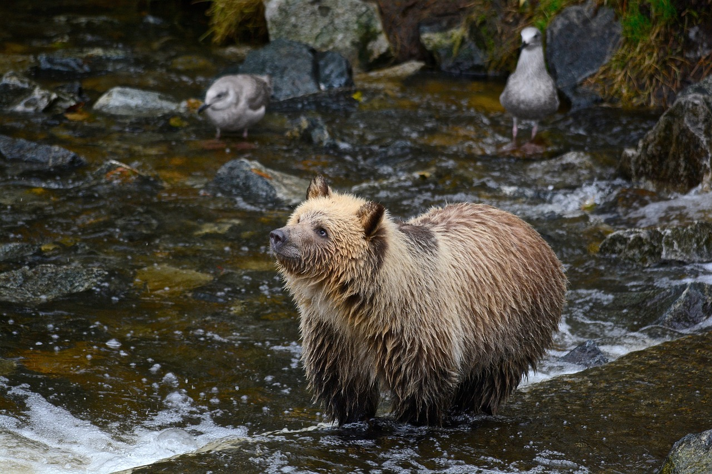
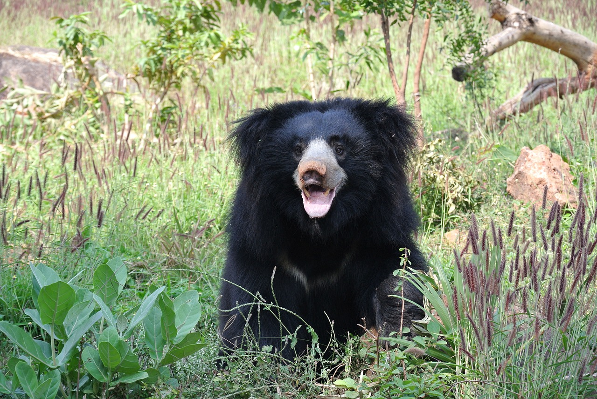
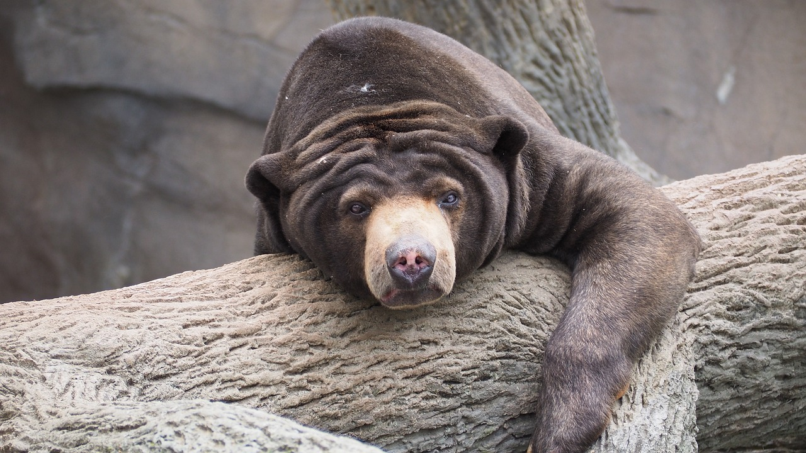
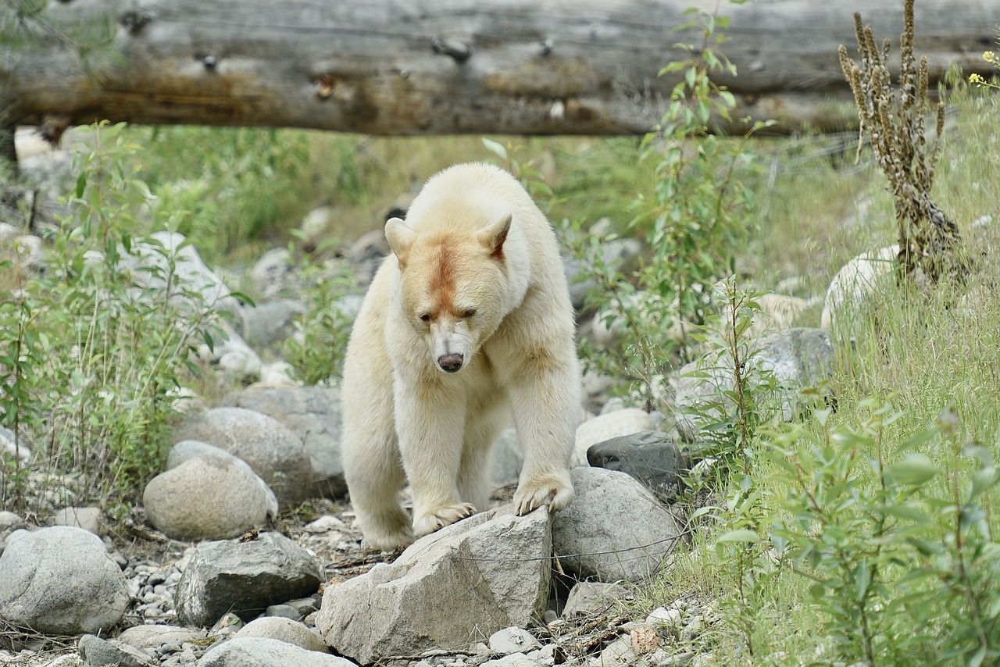

polar bears
Source: Makabera, Polar bear Zoo Captivity, Pixabay.com, (https://pixabay.com/photos/polar-bear-zoo-captivity-6951677/)
grizzly bears
Source: MargSkogland, grizzly bear grizzly cub, Pixabay.com, (https://pixabay.com/photos/grizzly-bear-grizzly-cub-river-6510170/)
sloth bears
Source: JudaM, Sloth bear bear India, Pixabay.com, (https://pixabay.com/photos/sloth-bear-bear-india-animal-sloth-1136129/)
giant panda bears

Source: Cimberley, Animal panda mammal, Pixabay.com, (https://pixabay.com/photos/animal-panda-mammal-species-fauna-1236875/)
sun bears
Source: JakeWilliamHeckey, Sun bear bear sun, Pixabay.com, (https://pixabay.com/photos/sun-bear-bear-sun-wild-wildlife-1421786/)
kermode bears
Source: MargSkogland, Animal bear mammal, Pixabay.com, (https://pixabay.com/photos/animal-bear-mammal-wildlife-6662160/)